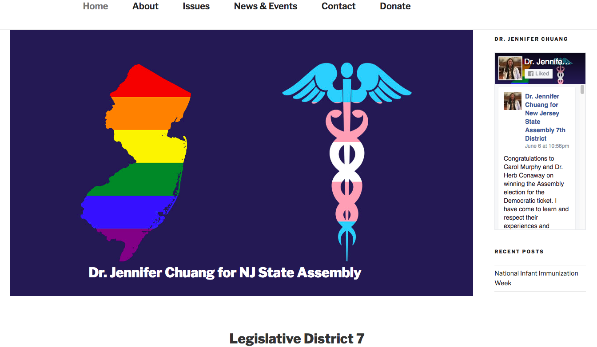
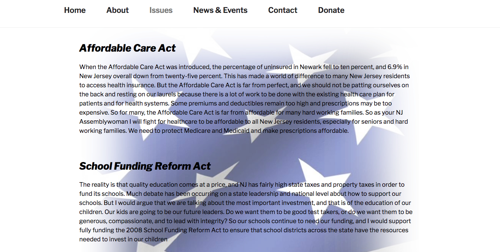
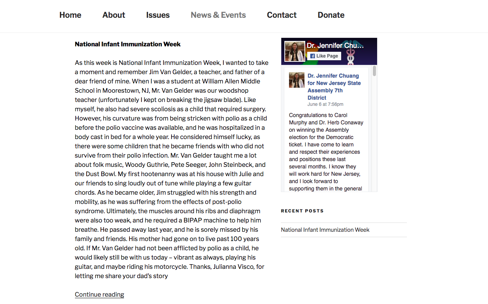

This GIF shows the responsive menu at work!
Recently, I created a site for a client who was running for New Jersey State Assembly Woman in the Democratic primary. She did not win the primary election and asked for the site to taken down. This webpage recreates some of the aspects of the website I created. It was made with WordPress using the 2017 theme.
Here is the front page created for the website:
Here is the Issues Page made from a custom page template with a light flag background
This GIF shows the responsive menu at work!
The News and Events custom page template combined blog posts with a Facebook widget side menu. I created custom field types for the blog that included Custom page tempate that combines blog posts with facebook widget side menu. Created custom field types for this blog to include the date.
